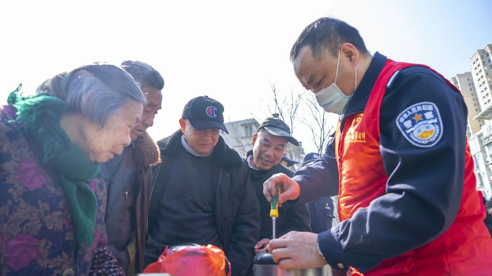
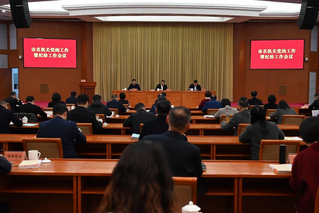

在持续深化文明单位创建过程中，市直机关各单位坚持把文明创建融入机关文化建设和队伍建设全过程，注重发挥先进典型的示范引领作用，推动文明创建与机关党建、志愿服务、作风建设同频共振，不断汇聚向上向善的精神力量。
近年来，越来越多党员干部从“我先做”走向“大家一起做”，从个体自觉延伸到集体参与，从一次活动发展为常态化实践。无论是环境提升、文明劝导，还是便民服务、志愿帮扶，都在持续积累中形成了可感可见的文明成果。
立心：以榜样凝聚精神力量
坚持精神铸魂与榜样带动相结合，以先进典型引领凝聚文明创建向心力，将榜样力量转化为文明创建的内生动力。各单位通过选树先进、宣传典型、开展交流分享等形式，推动干部职工在学先进、赶先进中不断强化责任意识和服务意识，为文明单位创建注入鲜活的精神源泉。

立行：以机制保障常态长效
为确保文明创建活动常态化、制度化，各单位不断完善工作机制，压实责任链条，细化任务分工，推动形成上下联动、协同推进、全员参与的创建格局。通过志愿服务队伍建设、活动项目化管理、常态化考评督导等方式，持续提升文明创建工作的规范化、项目化、长效化水平。

立效：以职能践行为民初心
坚持把文明创建融入主责主业，推动志愿服务与服务群众深度融合。围绕基层治理、法治宣传、帮扶服务、社区共建等内容，广大党员干部立足岗位、发挥专长，在服务群众中践行初心使命，在解决实际问题中展现机关担当，让文明创建成果真正转化为群众可感可知的服务成效。
文明就在身边，关键在于每个人的参与和坚持。下一步，市直机关将持续深化文明创建内涵，推动形成更多可复制、可推广的经验做法，让文明之风吹进机关、服务群众、引领发展。